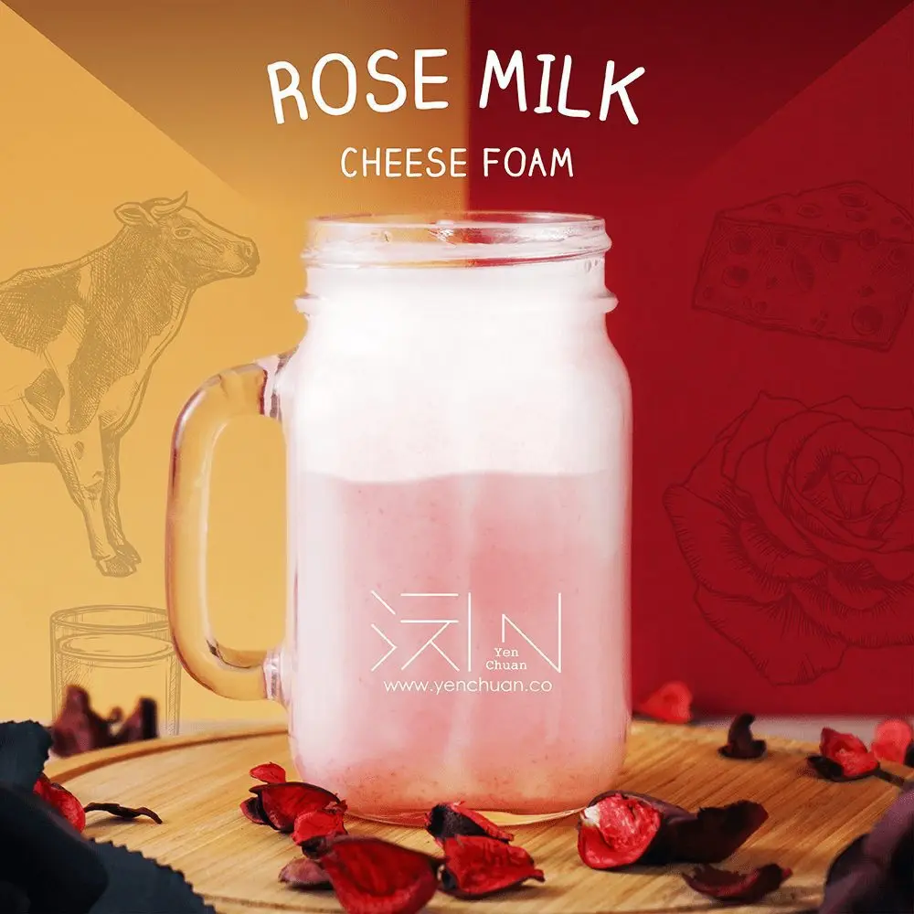

文章 / 飲品配方與資訊
Rose milk cheese foam, a delicious Valentine’s treat!
這篇是英文原文，尚未完成繁體中文翻譯。中文選單與相關商品連結不會切回英文介面。

查看英文原文（尚未翻譯）
Want to celebrate Valentine’s with a sweet, lovely drink? Try Rose milk cheese foam – A delightfully pink rose-flavored milk, topped with a creamy layer of rich cream cheese foam!
What is Rose Milk Cheese Foam?
This comforting pick-me-up is a unique twist on the classic milkshakes- creamy, fragrant, and impossible to resist. It combines the smooth and rich flavor of cheese foam with the sweet, floral notes of rose milk, creating a truly one-of-a-kind drink.

The cream cheese foam is the star of the show: a slightly savory flavor with some zing and richness but not too overpowering, adding a lovely depth to the drink.
The tangy combination brings out the sweetness of the cream and the rose milk, taking it to the next level.
The thick, foamy layer of cream also adds a delightful mouthfeel, be it drinking the milk through the cream or mixing the two into a creamy mix.
This perfectly balanced and utterly satisfying drink is perfect for any occasion. Whether sipping it on a hot summer day or enjoying it with your beloved on a cold winter evening, rose cream top is sure to become a new household favorite.
Just beware of the milk mustache!
Want to make this drink truly unique? Tweak the amount of sugar, milk, and cream to your taste, or add your favourite tea blends to create a combination to call your own!


Rose milk cheese foam
The perfect mix of rose and cheese foam gives this drink a subtle floral taste and a smooth, rich mouthfeel!
What you’ll need
How to make
Fill glass with 500ml water and rose milk powder. Mix well
Add 150ml water to the cream top powder in a mixing bowl, then beat until thick and frothy yet slightly runny
Drop some ice cubes into the glass, then slowly pour in the cream on top
Enjoy!
For a thicker, more foamy cream top: Try blending the cream top powder with fresh cream! If you can’t find fresh cream, you can use whipped cream in a pinch.
Extra tips
Garnish with crushed rose petals or pistachios sprinkle to give it some visual flair. Want a more fragrant, memorable taste? Add a dash of vanilla or rosewater!
To get the most out of the drink, instead of using a straw, drink it straight from the cup – every little sip is a glorious mix of foamy cream and fragrant rose milk!
Interested?
Time to give it a try – pick up the ingredients to get started!